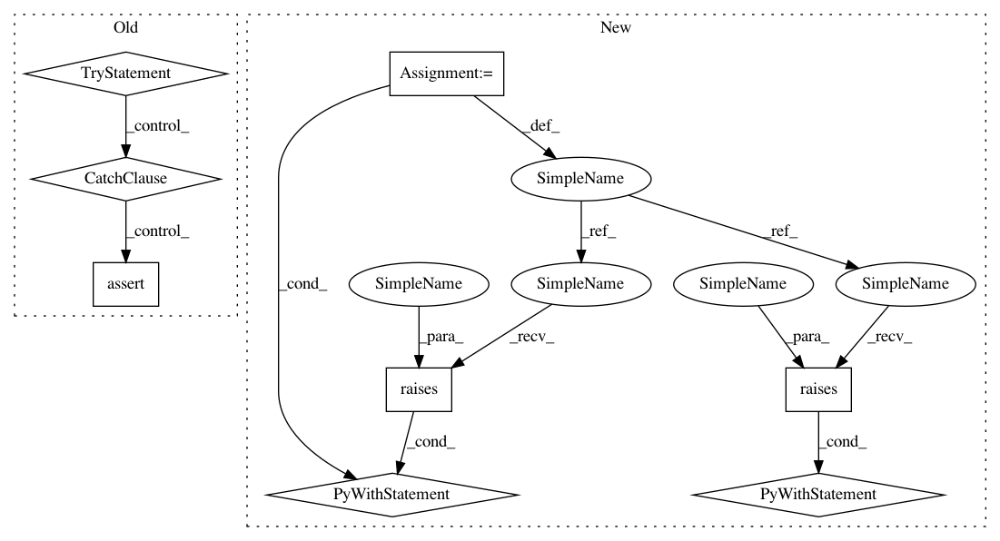

9b39c4c4d20eef7a2b0b8420945f09d3731e1b67,sklearn/feature_extraction/tests/test_text.py,,test_countvectorizer_empty_vocabulary,#,328
Before Change
def test_countvectorizer_empty_vocabulary():
try:
vect = CountVectorizer(vocabulary=[])
vect.fit(["foo"])
assert False, "we shouldn"t get here"
except ValueError as e:
assert "empty vocabulary" in str(e).lower()
try:
v = CountVectorizer(max_df=1.0, stop_words="english")
// fit on stopwords only
v.fit(["to be or not to be", "and me too", "and so do you"])
After Change
def test_countvectorizer_empty_vocabulary():
with pytest.raises(ValueError, match="empty vocabulary"):
vect = CountVectorizer(vocabulary=[])
vect.fit(["foo"])
with pytest.raises(ValueError, match="empty vocabulary"):
v = CountVectorizer(max_df=1.0, stop_words="english")
// fit on stopwords only
v.fit(["to be or not to be", "and me too", "and so do you"])
def test_fit_countvectorizer_twice():
cv = CountVectorizer()
X1 = cv.fit_transform(ALL_FOOD_DOCS[:5])
X2 = cv.fit_transform(ALL_FOOD_DOCS[5:])
In pattern: SUPERPATTERN
Frequency: 3
Non-data size: 8
Instances
Project Name: scikit-learn/scikit-learn
Commit Name: 9b39c4c4d20eef7a2b0b8420945f09d3731e1b67
Time: 2020-02-16
Author: sci@feldbauer.org
File Name: sklearn/feature_extraction/tests/test_text.py
Class Name:
Method Name: test_countvectorizer_empty_vocabulary
Project Name: apache/incubator-tvm
Commit Name: e180b6614a31768d7ddf04df96c989037d25b88e
Time: 2020-05-20
Author: tqchen@users.noreply.github.com
File Name: tests/python/unittest/test_ir_attrs.py
Class Name:
Method Name: test_make_attrs
Project Name: scikit-learn/scikit-learn
Commit Name: 9b39c4c4d20eef7a2b0b8420945f09d3731e1b67
Time: 2020-02-16
Author: sci@feldbauer.org
File Name: sklearn/feature_extraction/tests/test_text.py
Class Name:
Method Name: test_countvectorizer_empty_vocabulary
Project Name: matplotlib/matplotlib
Commit Name: 3e23c4eb8290d5e1b781848a0b8b9682ac709b25
Time: 2017-03-09
Author: ianthomas23@gmail.com
File Name: lib/matplotlib/tests/test_contour.py
Class Name:
Method Name: test_contour_shape_mismatch_3